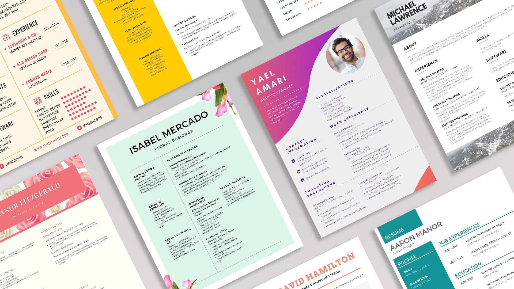

CV USING HTML & CSS
This project was supposed to be a portfolio, but instead i accidentally made a Curriculum Vitae using an HTML as i was confused between a portfolio and a CV.

This project have all the requirements for a CV as i had to turn it into a real CV which will benefit me in the long run.
The old portfolio can be viewed from here.
The full size can be viewed from here.